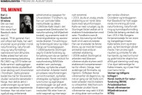

Lena Eline Laukvik
K, #60651, f. 26 august 1922
Foreldre
Biografi
Lena Eline Laukvik ble født den 26 august 1922 på/i Flatanger, Nord-Trøndelag.
| Sist redigert |
6 januar 2011 00:00:00 |
| Slektskap | 5-menning 1 gang forskjøvet til Håkon Wahl |
Oddrun Laukvik
K, #60652, f. 5 juni 1924
Foreldre
Biografi
Oddrun Laukvik ble født den 5 juni 1924 på/i Flatanger, Nord-Trøndelag.
| Sist redigert |
6 januar 2011 00:00:00 |
| Slektskap | 5-menning 1 gang forskjøvet til Håkon Wahl |
Aase Laukvik
K, #60653, f. 17 mai 1926, d. 10 juni 2011
Foreldre
Biografi
Aase Laukvik ble født den 17 mai 1926 på/i Flatanger, Nord-Trøndelag. Hun giftet seg med
Sved. Hun døde den 10 juni 2011 på/i Flatanger, Nord-Trøndelag. Hun ble gravlagt den 17 juni 2011 på/i Vik kirkegård, Flatanger, Nord-Trøndelag.
Aase Laukvik was also known as Aase Sved.
| Sist redigert |
14 juni 2011 00:00:00 |
| Slektskap | 5-menning 1 gang forskjøvet til Håkon Wahl |
Johan Andersen Bådsvik
M, #60654, f. 1846, d. 14 juni 1921
Biografi
Johan Andersen Bådsvik ble født i 1846 på/i Otterøy, Nord-Trøndelag. Han giftet seg med
Ovedia Ottesdatter Ekker. Han døde den 14 juni 1921 på/i Otterøy, Nord-Trøndelag.
| Sist redigert |
13 august 2024 18:41:18 |
Marie Bådsvik
K, #60655, f. 14 januar 1887, d. 25 januar 1964
Foreldre
Biografi
Marie Bådsvik ble født den 14 januar 1887 på/i Otterøy, Nord-Trøndelag. Hun døde den 25 januar 1964 på/i Namdalseid, Nord-Trøndelag.
Marie Bådsvik bygslet i 1933 Bådsvika 31/13, Statland, Otterøy, Nord-Trøndelag.
| Sist redigert |
13 august 2024 18:39:31 |
| Slektskap | 4-menning 2 ganger forskjøvet til Håkon Wahl |
Karl Adjof Bådsvik
M, #60656, f. 21 juli 1881, d. 18 oktober 1939
Foreldre
Biografi
Karl Adjof Bådsvik ble født den 21 juli 1881 på/i Otterøy, Nord-Trøndelag. Han giftet seg med
Olga Bendiksdatter Kvernø. Han døde den 18 oktober 1939.
Karl Adjof Bådsvik bodde i 1910 på/i Sagviken 31/7, Jøssund, Flatanger, Nord-Trøndelag.
| Sist redigert |
6 januar 2011 00:00:00 |
| Slektskap | 4-menning 2 ganger forskjøvet til Håkon Wahl |
Otelie Bådsvik
K, #60657, f. 13 februar 1883, d. 13 januar 1928
Foreldre
Biografi
Otelie Bådsvik ble født den 13 februar 1883 på/i Otterøy, Nord-Trøndelag. Hun døde den 13 januar 1928 på/i Otterøy, Nord-Trøndelag.
| Sist redigert |
13 august 2024 18:44:15 |
| Slektskap | 4-menning 2 ganger forskjøvet til Håkon Wahl |
Johanne Bådsvik
K, #60658, f. 5 september 1884
Foreldre
Biografi
Johanne Bådsvik ble født den 5 september 1884 på/i Otterøy, Nord-Trøndelag.
Johanne Bådsvik bodde på/i Statland, Otterøy, Nord-Trøndelag.
| Sist redigert |
6 januar 2011 00:00:00 |
| Slektskap | 4-menning 2 ganger forskjøvet til Håkon Wahl |
Olga Bendiksdatter Kvernø
K, #60659, f. 29 november 1879, d. 1934
Foreldre
Biografi
Olga Bendiksdatter Kvernø ble født den 29 november 1879 på/i Flatanger, Nord-Trøndelag. Hun giftet seg med
Karl Adjof Bådsvik. Hun døde i 1934 på/i Flatanger, Nord-Trøndelag.
Olga Bendiksdatter Kvernø was also known as Olga Bådsvik.
| Sist redigert |
17 februar 2017 00:00:00 |
Jørund Baadsvik
M, #60660, f. 28 februar 1909, d. 6 oktober 1957
Foreldre
Biografi
Jørund Baadsvik ble født den 28 februar 1909 på/i Fosnes, Nord-Trøndelag. Han giftet seg med
Gjertrud Gunhild Johnsen. Han døde den 6 oktober 1957 på/i Namsos, Nord-Trøndelag. Han ble gravlagt den 14 oktober 1957 på/i Klinga kirkegård, Namsos, Nord-Trøndelag.
Jørund Baadsvik var militærutdannet. fenrik.
| Sist redigert |
6 januar 2011 00:00:00 |
| Slektskap | 5-menning 1 gang forskjøvet til Håkon Wahl |
Gjertrud Gunhild Johnsen
K, #60661, f. 3 november 1911, d. 1 september 2002
Biografi
Gjertrud Gunhild Johnsen ble født den 3 november 1911 på/i Bangsund; Klinga, Namsos, Nord-Trøndelag. Hun giftet seg med
Jørund Baadsvik. Hun døde den 1 september 2002 på/i Namsos, Nord-Trøndelag. Hun ble gravlagt den 6 september 2002 på/i Klinga kirkegård, Namsos, Nord-Trøndelag.
Gjertrud Gunhild Johnsen was also known as Gjertrud Gunhild Baadsvik.
| Sist redigert |
6 januar 2011 00:00:00 |
Karl Julius Baadsvik
M, #60662, f. 23 februar 1942, d. 12 august 2020
Foreldre
Familie:
| Sønn | Øystein Baadsvik+ |
| Sønn | Torgeir Baadsvik |
| Datter | Tale Baadsvik |

Karl J. Baadsvik
Biografi
Karl Julius Baadsvik ble født den 23 februar 1942. Han giftet seg med Irmelin Aarberg Andersen. Han døde den 12 august 2020 på/i Trondheim, Trøndelag.
Karl Julius Baadsvik was also known as Kalle Baadsvik. Han bodde på/i Trondheim, Sør-Trøndelag. Han ble bisatt den 24 august 2020 Ilen kirke, Trondheim, Sør-Trøndelag.
| Sist redigert |
28 august 2020 00:00:00 |
| Slektskap | 6-menning til Håkon Wahl |
Per Olav Baadsvik
M, #60663, f. 4 juni 1946, d. 9 februar 2024
Foreldre
Familie: Halfrid Johanne Rønning
| Sønn | Torkel Olav Baadsvik |
| Sønn | Jørund Olav Baadsvik |
Biografi
Per Olav Baadsvik ble født den 4 juni 1946. Han giftet seg med Halfrid Johanne Rønning. Han døde den 9 februar 2024.
Per Olav Baadsvik ble konfirmert i 1962 på/i Klinga kirke, Namsos. Han bodde på/i Bangsund; Klinga, Namsos, Nord-Trøndelag. Han pensjonerte seg i 2004. Per Olav har hatt en rekke tillitsvalg, både lokalt og nasjonalt. Han ble bisatt den 20 februar 2024 Klinga kirke, Namsos, Trøndelag.
| Sist redigert |
16 februar 2024 18:29:28 |
| Slektskap | 6-menning til Håkon Wahl |
Guttorm Baadsvik
M, #60664, f. 27 januar 1914, d. 21 mars 1965
Foreldre
Familie: Oliv Øyom (f. 9 januar 1920, d. 25 september 2015)
| Sønn | Tore Baadsvik |
| Datter | Bjørg Baadsvik |
| Sønn | Olav Baadsvik |
Biografi
Guttorm Baadsvik ble født den 27 januar 1914 på/i Otterøy, Nord-Trøndelag. Han giftet seg med
Oliv Øyom. Han døde den 21 mars 1965 på/i Namsos, Nord-Trøndelag. Han ble gravlagt den 26 mars 1965 på/i Klinga kirkegård, Namsos, Nord-Trøndelag.
| Sist redigert |
29 september 2015 00:00:00 |
| Slektskap | 5-menning 1 gang forskjøvet til Håkon Wahl |
Borgny Baadsvik
K, #60665, f. 13 august 1915, d. 7 desember 1989
Foreldre
Biografi
Borgny Baadsvik ble født den 13 august 1915 på/i Otterøy, Nord-Trøndelag. Hun giftet seg med
Johan Magnus Andersen. Hun døde den 7 desember 1989 på/i Hamarøy, Nordland. Hun ble gravlagt på/i Hamarøy gamle kirkegård, Hamarøy, Nordland.
Borgny Baadsvik was also known as Borgny Andersen.
| Sist redigert |
6 januar 2011 00:00:00 |
| Slektskap | 5-menning 1 gang forskjøvet til Håkon Wahl |
Oddlaug Baadsvik
K, #60666, f. 8 mai 1917, d. 29 oktober 2003
Foreldre
Biografi
Oddlaug Baadsvik ble født den 8 mai 1917 på/i Otterøy, Nord-Trøndelag. Hun døde den 29 oktober 2003 på/i Levanger, Nord-Trøndelag. Hun ble gravlagt den 4 november 2003 på/i Levanger kirkegård, Levanger, Nord-Trøndelag.
| Sist redigert |
19 september 2020 00:00:00 |
| Slektskap | 5-menning 1 gang forskjøvet til Håkon Wahl |
Oliv Øyom
K, #60667, f. 9 januar 1920, d. 25 september 2015
Familie: Guttorm Baadsvik (f. 27 januar 1914, d. 21 mars 1965)
| Sønn | Tore Baadsvik |
| Datter | Bjørg Baadsvik |
| Sønn | Olav Baadsvik |
Biografi
Oliv Øyom ble født den 9 januar 1920 på/i Harran, Grong, Nord-Trøndelag. Hun giftet seg med
Guttorm Baadsvik. Hun døde den 25 september 2015.
Oliv Øyom was also known as Oliv Baadsvik. Hun bodde på/i Sandefjord, Vestfold. Hun ble bisatt den 6 oktober 2015 Ekeberg kapell, Sandefjord, Vestfold.
| Sist redigert |
29 september 2015 00:00:00 |
Johan Magnus Andersen
M, #60669, f. 13 mars 1917, d. 23 mai 1981
Familie: Borgny Baadsvik (f. 13 august 1915, d. 7 desember 1989)
| Datter | Kari Andersen |
| Datter | Brit Andersen |
Biografi
Johan Magnus Andersen ble født den 13 mars 1917 på/i Hamarøy, Nordland. Han giftet seg med
Borgny Baadsvik. Han døde den 23 mai 1981 på/i Hamarøy, Nordland. Han ble gravlagt på/i Hamarøy gamle kirkegård, Hamarøy, Nordland.
| Sist redigert |
6 januar 2011 00:00:00 |
Bernt Kvam
M, #60672, f. omtrent 1855
| Sønn | Oluf Osmand Kvam |
| Datter | Augusta Kvam |
| Sønn | Charley Kvam |
| Sønn | Lars Kvam |
Biografi
Bernt Kvam ble født omtrent 1855 på/i Beitstad, Steinkjer, Nord-Trøndelag. Han giftet seg med
Karen Ottesdatter Ekker.
Bernt Kvam bodde på/i Chicago, Illinois, USA.
| Sist redigert |
24 mai 2022 00:00:00 |
{kind=link}